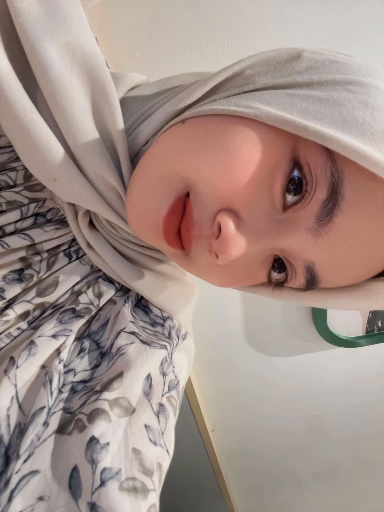
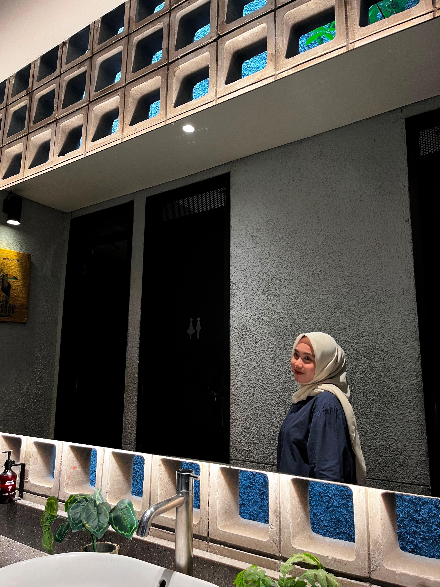

Web Development
Dasar HTML, CSS, dan JavaScript untuk membangun halaman website.
Hello, welcome to my website!
Selamat datang di ruang digital saya. Di sini, kamu bisa mengenal saya lebih dekat, melihat perjalanan pendidikan, kemampuan, dan beberapa proyek yang pernah saya kerjakan.

Beberapa hal singkat tentang diri saya.
Saya adalah mahasiswa Program Studi Sistem Informasi di Universitas Pamulang, Kampus Serang. Saya tertarik mempelajari teknologi, pengembangan website, dan bagaimana teknologi dapat membantu aktivitas sehari-hari.
Website ini menjadi media untuk memperkenalkan diri, mendokumentasikan proses belajar, serta menampilkan karya yang saya kembangkan.
Every picture has its own story. A little space to capture a moment of my journey.

Setiap perjalanan pendidikan memberikan pengalaman, pengetahuan, dan pelajaran berharga yang membentuk diri saya hingga saat ini.
Saat ini saya sedang menempuh pendidikan di Program Studi Sistem Informasi. Saya terus mengembangkan pengetahuan di bidang teknologi, sistem informasi, dan pemrograman.
Sistem InformasiMelanjutkan pendidikan menengah kejuruan. Pada masa ini, saya mendapatkan pengalaman belajar, mengembangkan kemampuan, serta mempersiapkan diri untuk melanjutkan pendidikan ke jenjang yang lebih tinggi.
Teknik Komputer dan JaringanMenempuh pendidikan menengah pertama. Selain mendapatkan ilmu pengetahuan, saya juga belajar mengenai kedisiplinan, tanggung jawab, kemandirian, dan kehidupan bersama.
Madrasah TsanawiyahMemulai perjalanan pendidikan formal. Di sinilah saya membangun dasar pengetahuan, mengenal lingkungan sekolah, serta mulai belajar berbagai hal baru.
Sekolah DasarSalah satu bagian paling berkesan dalam perjalanan pendidikan saya adalah pengalaman tinggal di lingkungan boarding school selama enam tahun, sejak MTs hingga SMK di Arrahman Cidadap.
Pengalaman ini mengajarkan saya untuk hidup lebih mandiri, disiplin, bertanggung jawab, menghargai waktu, serta mampu beradaptasi dengan lingkungan dan orang-orang baru. Jauh dari keluarga bukanlah hal yang selalu mudah, tetapi dari pengalaman tersebut saya belajar menjadi pribadi yang lebih kuat, dewasa, dan menghargai setiap proses.
Six years of learning, growing, and becoming better.Beberapa bidang yang sedang saya pelajari dan kembangkan.
Dasar HTML, CSS, dan JavaScript untuk membangun halaman website.
Mengolah dokumen, presentasi, dan data untuk kebutuhan perkuliahan.
Menyusun tampilan digital yang rapi, mudah digunakan, dan menarik.
Mempelajari proses bisnis, analisis sistem, basis data, dan teknologi informasi.
Saat ini saya masih dalam proses belajar dan mengembangkan kemampuan di bidang teknologi informasi, serta mencoba hal-hal baru untuk meningkatkan kemampuan dan pengalaman saya.
Contoh proyek dan tugas yang pernah atau sedang saya kerjakan.
Konsep website untuk membantu pencatatan dan pengelolaan keuangan sederhana.
HTML · CSS · JavaScriptKonsep aplikasi layanan laundry dengan informasi pelanggan dan status pesanan.
Flutter · DartWebsite personal untuk memperkenalkan profil, pendidikan, kemampuan, dan proyek.
HTML · CSS · JavaScriptDan proyek lainnya.
Terima kasih sudah mengunjungi website saya. Silakan hubungi saya melalui informasi kontak berikut.
Punya pertanyaan, ide, atau ingin bekerja sama? Kirim pesan melalui formulir berikut.
Saya terbuka untuk berdiskusi, berbagi ide, dan menjalin koneksi baru. Jangan ragu untuk menghubungi saya!